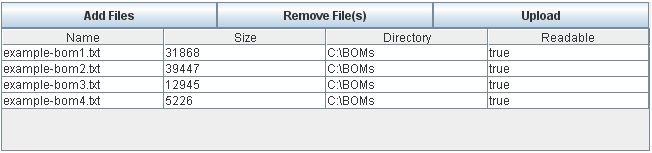

JFileChooser
to allow the user to select an arbitrary number of files from a directory. Depending
on the mode in which the component is rendered, the user can even select files
from multiple directories.
A sample invocation of the component might look like this: Rendered on the page, it would look like this:

This is the "full" mode (or "type"). This allows the user to select files from several different locations, verify that the correct files have been selected, then upload them all at one time. The component also supports a "button" mode: Which renders to this:
In this mode, the user clicks the button, selects the desired files, and clicks OK, at which point the files are uploaded.
risb:multiFileUpload uses a PhaseListener to handle the file
uploads, which takes each file upload and stores it in the FileHolder
specified in the component markup. The Sandbox provides a default implementation of the
FileHolder interface, om.sun.faces.sandbox.model.FileHolderImpl,
which simply takes the byte[] for each file and stores in in an internal
Collection. Applications are free to implement their own FileHolder,
for example, to take each file and store it in a database, write it to an app-specific
location on disk, etc.
One call the files have been processed, the method referenced by the destionationUrl
EL expression is called to determine the page to which to navigate. This method can either just
return the view name, or it can process the files uploaded and return different views
depending on any validation done on the uploaded files, allowing the user
to have an error page, for example.
NOTE: This does *NOT* currently resolve a navigation case result string to the mapped view from the Faces configuration. This assumes that the string in question is the *name* of a view, so "success" will become http://localhost:8080/MyContext/success.jsf, not http://localhost:8080/MyContext/youdidit.jsf that you may have mapped in your Faces config. This is due to the lack of a portable way of making that resolution.